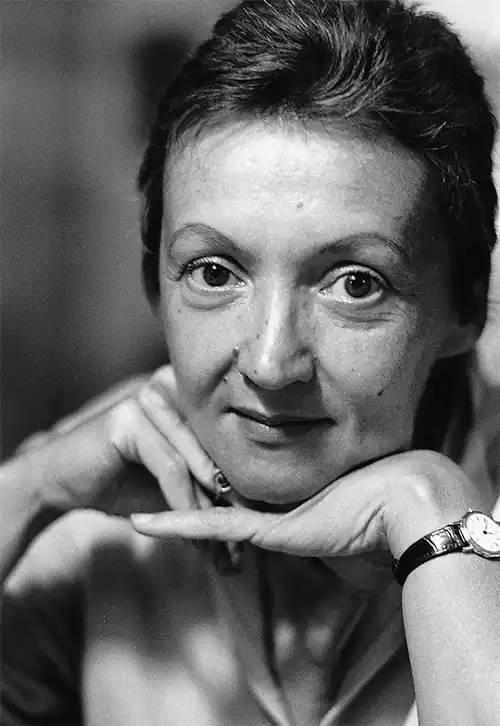
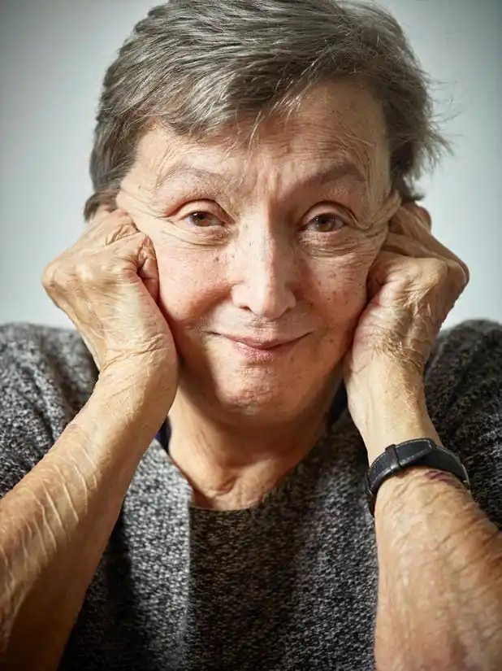

Австрійську письменницю Крістіне Нестлінгер уважають однією з найпопулярніших авторок у сучасній Європі. Творча спадщина мисткині надзвичайно багата: проза, вірші, п'єси, сценарії радіо— й телеспектаклів тощо. Відкритість письменниці, тонке розуміння нею людської психології, оптимізм і вміння дивитися на все з гумором забезпечують успіх її книжок насамперед серед дітей і підлітків у всьому світі.
Крістіне Нестлінгер народилася 13 жовтня 1936 р. ум. Відні (Австрія). Її батько був годинниковим майстром, а мати — вихователькою в дитячому садку. Дівчинка навчалася в гімназії в гуманітарному класі, де на все життя полюбила літературу. Після закінчення гімназії Крістіне вирішила стати художницею й вступила до Академії мистецтв у Відні, займалася графікою та ілюструвала книжки для дорослих. Коли народилися її доньки, вона повністю присвятила себе їхньому вихованню. Саме для них вигадала Фредеріку — неслухняну дівчинку з малиновим волоссям, з якою постійно траплялися різні історії. Крістіне Нестлінгер спочатку створила серію малюнків, а пізніше записала історії, що розповідала дітям. Так виникла книжка "Рудоволоса Фредеріка", яка була опублікована 1970 р. й одразу сподобалася читачам. За неї авторка отримала високу винагороду Європи — Літературну премію Фрідріха Бедекера.
Молода авторка наполегливо працювала. І невдовзі одна за одною з'являються її нові книжки: "Діти з дитячого підземелля", "Троє поштових грабіжників" (1971), "Геть огіркового короля", "Чоловік для мами" (1972), "Чорний пан і великий собака", "Лети, колорадський жук!", "Маленький пан береться за справу" (1973), Конрад, або Дитина з бляшанки" (1975). Кожна з них викликала широкий резонанс у читацькому колі: одні вважали їх занадто бунтарськими, не педагогічними, навіть шкідливими для дітей, а інші — чесними, відкритими, актуальними. Однак усі погоджувалися, що письменниця висвітлює реальні1 проблеми дітей і дорослих, що виникають у сучасному житті, і шукає вирішення складних питань. На прикладах історій персонажів (як позитивних, так і негативних) К. Нестлінгер розкриває теми дитячої самотності ("Дитина за обміном"), пошуку власного "Я" (VМаргаритко, моя квітко"), підліткової кризи (VІльзе Янда, 14"), шукаючи витоки проблем дітей і підлітків насамперед у сімейних стосунках. За роки творчості К. Нестлінгер отримала понад 30 літературних премій, як австрійських, так і міжнародних. Найвизначнішими серед них є Міжнародна премія імені Г. К. Андерсена (1984), Премія пам'яті Астрід Ліндгрен (2003).